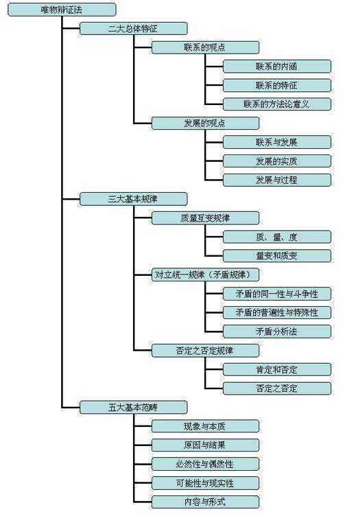

第一卷 物质世界及其发展规律
Table of Contents
马克思主义哲学是唯物主义和辩证法的统一。
马克思主义的唯物主义认为，世界在本质上是物质的，人与世界关系的基础是实践，人生活于其中的世界是与人的实践相联系的统一的物质世界。
马克思主义的唯物辩证法认为，物质世界是普遍联系和永恒发展的。联系的观点和发展的观点是唯物辩证法的总特征。
唯物辩证法是关于自然、社会和思维联系与发展的一般规律的科学。
马克思主义哲学揭示了世界的本质和发展的基本规律，为我们正确地发挥主观能动性，即正确地认识世界和有效地改造世界提供了科学的世界观和方法论指导。
第一节 物质世界和实践
一、物质世界的客观存在
1.世界是统一的物质世界
1.1 世界的本质问题是哲学必须回答的重大问题
哲学是世界观的理论体系。 世界观是什么？
所谓 世界观 ，就是人们对包括自然、社会和人类思维在内的整个世界的根本看法和根本观点，也是人们对人和世界关系的总体把握。
哲学是系统化、理论化的世界观，它从人和世界关系的角度揭示自然、社会和人类思维最普遍的本质和发展的最一般规律。
如何理解哲学是世界观，方法论和价值观的统一？
哲学是关于世界观的理论，用这种理论观点去观察、分析和解决问题，就是方法。所以哲学还为我们提供认识世界和改造世界的普遍方法。哲学既是理论化的世界观，又是方法论。
哲学并不只是简单地描述现实世界，而且还批判现实世界，构想更理想的未来世界。哲学往往作为理想、信念，从而也作为价值观对人们趁着导向和激励作用。
世界观、方法论与价值观的统一，使哲学与人们的生活息息相关。
世界的本质是什么？
要回答世界的本质问题，就必须说明思维和存在或意识和物质的关系。
全部哲学，特别是近代哲学的重大的基本问题，是思维和存在的关系问题。
– 恩格斯
哲学的基本问题包括两个方面的内容。
第一方面是本体论，即物质和意识哪个是本原，哪个是第一性的问题，是最重要的方面。
如何回答这个问题是划分唯物主义和唯心主义的标准。凡是认为物质是本原的、第一性的，意识是派生的、第二性的哲学，属于 唯物主义 ；凡是认为意识是本原的、第一性的，物质是派生的、第二性的哲学，属于 唯心主义 。
第二方面是认识论，即思维和存在的同一性问题，主要指思维能否认识存在的问题，也就是世界可不可以认识的问题。
对这个问题的回答，区分为可知论和不可知论。承认思维与存在的同一性，认为世界是可以认识的，属于 可知论 ；否认思维与存在的同一性，认为世界是不可能认识的，属于 不可知论 。
与哲学基本问题相一致， 社会存在与社会意识的关系问题是社会历史观的基本问题。
如何回答社会存在和社会意识哪个是第一性的问题，是划分历史唯物主义和历史唯心主义的标准。凡是认为社会存在决定社会意识的，是 历史唯物主义 ；凡是认为社会意识决定社会存在的，是 历史唯心主义 。
世界是如何存在的？
物质和意识的关系问题主要是回答世界的本质是什么以及世界可不可以认识的问题，它是哲学的基本问题，但不是哲学要研究的全部问题。
与这一问题相联系，还有世界如何存在的问题，即世界上的事物是以联系、发展的状态存在，还是以孤立、静止的状态存在的问题。
对这个问题的不同回答，区分为辩证法和形而上学。 辩证法 认为，世界上的事物都是相互联系的，运动发展的，发展的根本原因在于事物的内部矛盾。 形而上学 则认为，世界上的事物都是彼此孤立的，静止不变的，否认事物内部矛盾的存在。
在哲学上，在唯物主义和唯心主义的对立中，又交织着辩证法和形而上学的对立。辩证法和形而上学的对立从属于唯物主义和唯心主义的对立，辩证法或形而上学不是同唯物主义相结合，就是同唯心主义相结合。是辩证地还是形而上学地看世界，无论对唯物主义还是对唯心主义都有重要的影响作用。
1.2 在世界本质问题上一元论和二元论、唯物主义和唯心主义的对立
世界的本质问题，实质上是世界的统一性问题。
对这个问题的回答存在着一元论和二元论、唯物主义和唯心主义的对立。承认世界的统一性，认为世界上的事物有一个共同的本质或本原的哲学是 一元论 ；否认世界的统一性，认为世界上的事物有物质和精神这两个相互平行、各自独立的本原的哲学是 二元论 。
二元论虽然肯定了物质本原的存在，包含着一定唯物主义的成分，但它把精神说成是不依赖物质的独立存在的本原，认为精神是唯一能去的力量，物质是消极被动的，二元论最终往往倒向唯心主义。
辩证唯物主义科学地解释了世界的本质问题！
唯心主义有两种基本形式：主观唯心主义（主观精神是本原）和客观唯心主义（客观精神是本原）。
唯物主义经历了有一种基本形态：古代的朴素唯物主义，近代的形而上学（机械）唯物主义，现代的辩证唯物主义和历史唯物主义。
马克思把唯物主义和辩证法科学地结合起来，同时把唯物主义和辩证法运用于社会历史领域，创立了历史唯物主义。 辩证唯物主义和历史唯物主义是唯物主义哲学的最高形态。
世界的真正统一性在于它的物质性，这种物质性不是由魔术师三两句话所证明的，而是由哲学和自然科学的长期和持续的发展所证明的。
– 恩格斯
自然界、人类社会和人本身构成了整个世界。
自然界是客观的。
人和人类社会是客观的。首先，人和人类社会的形成是客观的过程，其次社会存在和发展的基础 – 生产方式也是客观的。
生产方式是什么？
生产方式 是人类向自然界谋取必需的物质生活资料的方式，是特定的生产力和生产关系的统一。 生产力 是一种不以人们的主观意志为转移的客观物质力量，它既是前人实践活动所创造的客观成果，又是人们现实活动的出发点。 生产关系 是在生产过程中形成的人们之间的经济关系，它不是由人们的主观意志决定的，而是由生产力的性质和水平决定的。
2.物质是不依赖于意识又能为意识所反映的客观实在
物质是标志客观实在的哲学范畴，这种客观实在是人通过感觉感知的，它不依赖于我们的感觉而存在，为我们的感觉所复写、摄影、反映。
– 列宁
简言之，物质是不依赖于意识又能为意识所反映的客观实在， 物质的唯一特性是客观实在性。
列宁的物质定义具有十分重要的意义。首先，它指出物质是不依赖意识的客观实在，同唯心主义划清了界限；其次，它指出物质是可以被人们认识的，同不可知论划清了界限；最后，它指出客观实在性是一切物质的共性，克服了旧唯物主义物质观的局限性（把自然科学的物质概念与哲学的物质概念混为一谈）。
3.运动是物质的根本特性
辩证唯物主义和历史唯物主义，不仅肯定世界是物质的，而且认为物质是运动、变化、发展的。 运动是物质的根本属性和存在方式。 只有把世界的物质统一性原理和事物运动、变化、发展的原理相结合，才是完整的、科学的世界观。
运动，就它被理解为存在的方式，被理解为物质的固有属性这一最一般的意义来说，囊括宇宙中发生的一切变化和过程，从单纯的位置变动起直到思维。
应用到物质上的运动，就是一般的变化。运动是标志物质世界一切事物和现象的变化和过程的哲学范畴。
– 恩格斯
运动是物质的固有属性，物质和运动不可分。一方面，世界上不存在脱离运动的物质。物质世界的运动是无条件的、永恒的、绝对的，否认物质的运动和运动的绝对性，必然导致形而上学。另一方面，世界上也不存在没有物质的运动。物质是运动的承担者或主体，一切运动都是物质的运动。否认物质是运动的承担者或主体，必然导致唯心主义。
形而上学和唯心主义的运动观，都是把物质和运动相割裂，前者主张没有运动的物质，后者主张没有物质的运动。
辩证唯物主义和历史唯物主义，在承认物质绝对运动的同时，也承认事物的相对静止状态。
什么是物质的相对静止？
所谓 相对静止 ，是标志物质运动在一定条件下、一定范围内牌暂时稳定和平衡状态的哲学范畴。
相对静止主要有以下两种情形：
- 一个事物对另一个事物来说没有发生位置的移动；
- 事物的质没有发生根本变化，即事物持的相对稳定性。
承认事物相对静止的存在的重要意义？
只有承认相对静止，才能理解事物的多样性，区分开不同的事物。因为事物只有处于相对静止的状态，才能保持自己质的稳定性，世界上才可能存在一个个有差别的事物。
只有承认相对静止，才能认识事物分化的条件和生命现象的产生。恩格斯指出：物质相对静止的可能性，是物质分化的本质条件，因而也是生命的本质条件。
只有承认相对静止，才能理解绝对运动。人们要描述或测量物体的运动，就必须得选择一个相对静止的物体作参考系。
总之，世界上的事物都是绝对运动和相对静止的统一，是动中有静，静中有动。形而上学把静止绝对化，否认运动；相对主义诡辩论则只承认运动，否认相对静止。二者的共同错误在于把绝对运动和相对静止相割裂。
4.时间和空间是物质运动的存在方式
时间是物质运动的持续性、顺序性。时间的特点是一维性，不可逆。
空间是物质运动的广延性、伸张性。物质的空间特性通常以两种形式表现出来 ：
- 表现为每一个物体都有一定的体积；
- 表现为每一个物体都处于一定的空间位置。
空间的特点是三维性，即每一个物体都具有一定的长度、宽度和高度。
时间和空间是内在统一不可分离的，四维时空概念就是一个表示时间和空间相统一的概念，它的意思是在长、宽、高的基础上又加上时间，人们在描述物体在空间中的运动变化时，需要把空间因素和时间因素结合起来。
时间和空间是运动着的物质的存在方式，时间和空间与运动着的物质不可分离，世界上既没有脱离时间和空间的物质，也没有脱离物质运动的时间和空间。
物质及其运动是客观的，作为物质运动存在方式的时间和空间自然也是客观的。
时间和空间既是绝对的、无限的，又是相对的、有限的，是两者的统一。其绝对性、无限性是指整个物质世界在时间上无始无终，在空间上无边无际；其相对性、有限性是指每一具体事物在时间上有始有终，在空间在有边有际。
二、实践的本质、特点、形式和作用
马克思主义对世界本质的解释，与旧唯物主义、唯心主义的不同，不仅提出了正确的哲学物质观，而且在于引入了实践的观点。
实践的观点是马克思主义哲学同旧唯物主义和唯心主义的根本区别。
从前的一切唯物主义的主要缺点是：对对象、现实、感性，只是从客体的或者直观的形式去理解，而不把它们当作感性的人的活动，当作实践去理解，不是从主体方面去理解。因此，和唯物主义相反，能动的方面却被唯心主义抽象地发展了，当然，唯心主义是不知道现实的、感性的活动本身的。
– 马克思
1.实践是主体能动地改造和探索客体的客观物质活动
唯心主义者把实践理解为纯主观、纯精神的活动，旧唯物主义把实践理解为日常生活的活动，这是片面的、不科学的。
马克思主义从主体与客体、主观与客观的关系中把握实践。马克思认为，环境的改变和人们的活动的一致，只能被看作是并合理地理解为革命的实践。毛主席把实践规定为是 主观见之于客观的东西 。
如何理解 “实践是主体能动地改造和探索客体的社会性的客观物质活动”？
实践主体 是指处于一定社会关系中的具有实践能力的人。人是实践活动中具有自主性和能动性的因素，他担负着提出实践目的、操纵实践工具、改造实践客体的多种任务。实践主体可以划分为个人主体、集团主体和类主体三种形式。
实践客体 是主体实践活动所指向的对象。实践客体具有客观性、对象性和社会历史性。实践客体是客观存在的，坚持这一点就同唯心主义划清了界限。但是，并不是所有客观存在的事物都是实践客体，只有那些成为实践活动所指向的对象的客观存在才是实践客体。
外部世界哪些部分成为实践客体，是同一定的社会历史条件相联系的。随着社会实践的发展，被纳入实践活动范围的客体也会不断扩大。实践活动具有三种基本类型：自然客体、社会客体和精神客体。
自然客体 既包括同人的活动发生关系的天然的自然物，也包括经过改造和加工人工自然物； 社会客体 是指人类社会； 精神客体 指的是成为人们实践对象的主观精神和客观化精神。
主观精神？客观化精神？
主观精神 是指人们的感觉、想象、思维等心理活动，它们以表情、姿态和语言表现出来。 客观化精神 是指以物的形式存在的精神生产的结果，如通过图像、语言文字表达出来 的文学作品、理论著作等。
客体的三种基本类型表明，人的实践活动不仅指向物质世界，而且也以人自身为实践活动对象，即在改造物质世界的同时进行自我改造。
实践具有哪些基本特点？
第一，客观性。只有坚持实践的客观性，才能从根本上与唯心主义实践观（把实践理解为纯主观、纯精神的活动）划清界限。
第二，自觉能动性。只有坚持实践的能动性，才能从根本上与旧唯物主义实践观（把实践理解为日常生活的活动）划清界限。
第三，社会历史性。实践是社会性的、历史性的活动。只有坚持实践的社会历史性，才能既同唯心主义实践观划清界限，又同旧唯物主义实践观以及实用主义实践观区别开来（把实践看成人为应付环境所采取的生物性活动，抹杀了实践活动的社会性）。
实践的三个特点是密切联系在一起的。
随着社会的发展，实践的内容和形式更加多样化。
实践具有哪些基本样式？
第一，物质生产实践。它是处理人与自然关系的活动，是最基本的实践活动。物质生产实践解决人类生存和发展所必需的衣、食、住、行的问题，是决定其他一切实践活动产生和发展的前提。
第二，处理社会关系的实践。它是处理人与人之间关系的活动，是为了配合物质生产实践所进行的活动。处理社会关系的实践主要表现为社会管理、阶级斗争、社会革命、社会改革等。
第三，科学实验。它是从物质生产实践中分化出来的尝试性、探索性的实践活动。科学实验的目的不是直接改造世界，而是为成功地改造世界提供必要的知识。
2.人生活于其中的世界是与人的实践相联系的物质世界
如何理解呢？
第一，人的实践活动与自然界的二重化（自在自然和人化自然）。
一切旧唯物主义把自然界看成是唯一的客观存在，认为人和社会只是自然界的一个能成部分，把自然界看成是与人的实践活动无关的纯粹自然，忽略了人和人和实践活动使自然界发生的巨大变化。
实践的观点把马克思主义自然观与旧唯物主义自然观区别开来。
第二，社会历史是人们的实践活动创造的。
旧唯物主义之所以仅仅在自然观上坚持唯物主义，在历史观上却陷入唯心主义，主要就是由于它缺乏实践的观点。一方面，它把人类生活于其中的自然看成是纯粹客观的自在的东西；另一方面，它又把人的实践活动看成是纯粹主观的东西，从而也就把人的实践活动所创造的社会历史看成是一种主观的过程。
马克思主义认为，人们为了满足自己的需要，必须从事物质资料生产活动，为了有效地进行生产活动，人与人之间就结成了一定的生产关系，在生产关系的基础上又形成一定的政治关系和思想关系，从而就形成复杂的社会关系体系。
！！！人类社会发展的历史归根到底是人类物质生产活动的历史，是物质资料生产方式发展的历史。用物质资料的生产活动和生产方式的发展去说明社会历史的发展，也就是用物质的原因去说明社会历史，这才有了历史唯物主义。
实践的观点是马克思主义社会历史观的基础。
第三，实践是人的存在方式。
旧唯物主义只看到人是自然界的一部分，没有看到人与动物的根本区别是人不断从事实践活动。
马克思主义认为，人是从自然界分化出来的，并且必须依赖自然界才能生活。与动物不同，人不仅是一种肉体的、有自然力的、有生命力的自然存在物，还是一种精神的、能动的、自主的存在物。一方面，人要立足现实，在由必然性所支配的自然界中生活；另一方面，人又不甘愿受自然界的种种限制，总是要在精神世界中创造理想生活，并通过实践活动把这些理想变为现实。
实践是人的存在方式。 人只有不断从事各种形式实践活动，才能生存和发展。
实践的观点是马克思主义关于人的观点的基础。
总之， 实践的观点是马克思主义哲学的基本观点 。正是在实践观点的基础上，马克思主义哲学才超越了以往的全部哲学，成了科学的世界观和方法论。
三、社会生活在本质上是实践的
马克思主义认为， 实践是人类社会产生、存在和发展的基础，是社会生活的本质。
第一，劳动实践是人类和人类社会产生的决定性环节。
现代科学研究表明，人类是由数万年前的类人猿进化而来的。动物式的本能的劳动促使类人猿前、后肢分工，逐渐由使用天然工具到学会自己制造劳动工具。劳动还促使了人脑的形成，推动了语言和意识的产生和发展，大大推动了人类的进步。
随着劳动的产生和发展以及人类的形成，人类的活动也由原来的动物性的自发的群体活动，逐渐变为自觉的生产劳动。在生产劳动中，人与人之间结成了一定的社会生产关系。在生产劳动和生产关系的基础上，人们还从事其他社会实践活动，形成其他社会关系，如政治关系，思想关系等，从而形成了人类社会。
第二，物质生产实践是人类社会得以存在的基础。
人类要生存，社会要存在，就必须进行生活资料的生产活动。生产活动是人们从事其他各种社会活动的基础。只有通过生产活动，解决了衣食住行的问题，人们才能从事政治、法律、科学、艺术、宗教等各种活动，形成各种复杂的社会关系。
第三，实践活动是推动社会发展的动力。
物质生产实践的持续进行，使生产力不断发展，从而推动人类社会不断发展。
广大劳动群众持续进行的生产实践不仅创造了人类生存所必需的物质生活资料，而且在生产实践中不断积累经验，改进生产工具和生产技术，推动了生产力的发展、生产方式的改变以及整个社会历史的进步。处理社会关系的实践使生产力与生产关系的矛盾、经济基础与上层建筑的矛盾得到解决，推动社会不断发展。
社会生活在本质上是实践的。这一思想的确立，使马克思主义哲学克服了形而上学唯物主义不彻底性的缺陷，把唯物主义贯彻到社会历史领域，科学地说明了社会的物质性。
第二节 物质世界的普遍联系和永恒发展
一、联系与发展的普遍性和多样性
联系的观点和发展的观点是唯物辩证法的总特征。
1.世界联系的普遍性和多样性
联系 是指事物之间以及事物内部诸要素之间的相互影响、相互作用和相互制约。
唯物辩证法认为，联系是相互区别的事物、现象或要素之间的联系，事物的相互联系与相互区别是互为前提的。
任何事物都有它不同于其他事物的特殊本质，因而是与其他事物相区别的；同时，任何事物都不是孤立存在的，总是同其他事物联系在一起的。
事物之间既相互区别又相互联系，这是事物的本来面貌。
事物之间的联系是客观的。
联系的客观性是指事物之间的相互联系是事物本身固有的，是不以人的主观意志为转移的。不仅自然界事物之间的联系是客观的，就是人类实践活动创造出来的社会生活的各个领域之间、各种事物之间的联系也是客观的。事物联系的客观性要求人们如实地从事物本身固有的联系中把握事物，反对用主观臆想的联系代替客观的真实的联系。
事物之间的联系是普遍的。
世界上任何事物都不能孤立地存在，都与周围的其他事物处于相互联系之中；每一事物内部各个要素也不能孤立地存在，都是与其他要素相互联系的；整个世界不是各种孤立的事物的机械堆积，而是由无数相互联系的事物构成的统一整体。
事物内部或事物之间的具体联系是复杂多样的。
事物联系的主要形式有：直接联系与间接联系、内部联系与外部联系、本质联系与非本质联系、必然联系与偶然联系，等等。
不同的联系对事物存在和发展所起的作用是不同的。
认识事物联系的多样性，对于我们观察和处理问题具有重要意义。首先，必须坚持全面的观点，尽可能地从各个方面来把握事物的各种联系，不要只看到某一部分、某一方面的联系，而忽视其他部分、其他方面的联系；其次，必须抓住事物中的必然的、本质的联系。
2.世界的运动发展
唯物辩证法认为，运动、变化、发展属于同一序列的范畴，分别使用这三个范畴时，它们各有侧重。
运动是物质的存在和根本属性，包括宇宙中发生的一切变化和过程，它是就其最一般的意义来说的；变化则侧重于强调运动中所发生的具体内容的改变，包括事物性质、数量、位置、结构、形态等方面的改变；发展是指事物一种特殊的运动变化，即事物由低级到高级、由简单到复杂的不断更替的运动变化过程，其实质是新事物的产生和旧事物的灭亡。
世界上的一切事物都是运动、变化和发展的，所以 世界是过程的集合体 。 所谓 过程 ，是指每一事物都有它的发生、发展和灭亡的历史。
3.两种对立的发展观
唯物辩证法与形而上学的根本对立和斗争焦在于是否承认矛盾是事物发展的动力，矛盾是世界最普遍最重要的联系。
唯物辩证法认为，世界是普遍联系的、永恒发展的。唯物辩证法是关于自然、社会和思维联系和发展一般规律的科学。它是由对立统一规律、质量互变规律、否定之否定规律和一系列其他范畴构成的科学体系。
对立统一规律揭示了事物发展的动力和源泉；质量互变规律揭示了事物发展的状态和形式；否定之否定规律揭示了事物发展的趋势和道路。
唯物辩证法的其他范畴则揭示了事物联系和发展的基本环节。
对立统一规律是唯物辩证法的实质与核心 ，是宇宙的根本规律。
这个辩证法的宇宙观，主要地就是教导人们要善于去观察和分析各种事物的矛盾运动，并根据这种分析，指出解决矛盾的方法。
– 毛泽东
二、世界联系与发展的基本规律
1.对立统一规律
1.1 矛盾的同一性和斗争性
对立统一规律 亦称矛盾规律，其基本内容是：任何事物都包含着矛盾，矛盾双方既统一又斗争，由此推动事物运动变化发展。简言之，矛盾就是对立统一。
矛盾双方的对立和统一这两重关系决定了矛盾具有两种基本属性，即同一性和斗争性。
1.2 矛盾是事物发展的动力
事物发展的动力和源泉是事物的内部矛盾 ，矛盾的同一性和斗争性在事物发展中都起着重要作用。同时，事物的外部条件对事物的发展也有重要影响作用。因此，必须正确认识事物发展的内因（内部矛盾）、外因（外部矛盾）及其关系。
内因和外因的关系是什么？
第一，内因是事物发展变化的根据，是第一位的原因。事物发展变化的根本原因不在事物外部，而在事物内部。
第二，外因是事物发展变化的条件，是第二位的原因。任何事物都不是孤立存在的，都和周围的事物相互影响、相互作用，外因是事物发展变化不可缺少的条件，不具备一定的外部条件，事物也不会发展变化。在一定情况下，外因对事物的发展甚至起决定性作用。
第三，外因通过内因而起作用。外因对事物发展变化所起的作用，表现在对事物内部矛盾的影响上，也就是通过使矛盾双方的状况和力量对比发展变化，推动事物的发展变化。 外因的作用无论多大，也必须通过内因而起作用。
1.3 矛盾的普遍性和特殊性
矛盾是普遍存在的。矛盾的普遍性是指矛盾存在于一切事物的发展过程中，存在于一切事物的发展过程的始终。简言之，矛盾无处不在，无时不有。
矛盾的普遍性原理，要求我们必须树立矛盾观点。无论任何时候，对任何事物，都要敢于承认矛盾，正确分析矛盾，并采取恰当的方法去解决矛盾，从而推动事物的发展。要坚持矛盾分析的方法，从矛盾的两个方面看问题，即坚持两点论，全面地看问题，反对形而上学一点论，防止片面地看问题。
矛盾是普遍存在的，但不同事物的矛盾又各不相同，都有其特殊性。
矛盾的特殊性有有三种形式：
- 不同事物的矛盾各有其特点；
- 同一事物的矛盾在不同发展过程和发展阶段各有不同的特点；
- 构成事物的诸多矛盾以及每一矛盾的不同方面各有不同的性质、地位和作用。
矛盾的特殊性原理具有重要的方法论意义。
分析矛盾的特殊性就是坚持具体问题具体分析。 一方面，分析矛盾的特殊性是正确认识事物的基础。只有分析矛盾的特殊性，才能把不同事物区别开来，正确地认识事物；另一方面，分析矛盾的特殊性是正确认解决矛盾的关键。不同的矛盾只能用不同的方法解决，只有具体地分析矛盾的特殊性，才能找到解决其一特殊矛盾的特殊方法。
矛盾的普遍性和特殊性的关系，也就是共性与个性、一般与个别的关系，它们是辩证统一的。矛盾的普遍性与特殊性是互相联结的、互相区别的，且在一定条件下可以互相转化。
1.4 矛盾发展的不平衡性
矛盾发展的不平衡性是矛盾特殊性的重要表现，它主要表现为两种情形：一种是主要矛盾和次要矛盾的不平衡；另一种是矛盾的主要方面和次要方面的不平衡。
矛盾的发展是不平衡的，其中有一种居于支配地位、起决定作用的矛盾，这就是 主要矛盾 ，其他处于服从地位的矛盾是 次要矛盾 。
主要矛盾和次要矛盾的关系？
首先，二者是相互影响、相互作用。一方面，主要矛盾规定和影响着次要矛盾的存在和发展，对事物的发展起决定作用，主要矛盾解决得好，次要矛盾就可以比较顺利地得到解决；另一方面，次要矛盾对主要矛盾有制约作用，次要矛盾解决得如何，反过来影响主要矛盾的解决。
其次，主要矛盾和次要矛盾的地位不是一成不变的，它们在一定条件下可以相互转化。基于主要矛盾和次要矛盾的这种关系，我们在观察和处理复杂问题的时候，要首先抓住和解决主要矛盾，同时又不忽略次要矛盾，还要注意主要矛盾和次要矛盾的转化，不失时机地转移工作重点。
主要矛盾和次要矛盾的原理，对社会主义现代化建设具有重要意义。我国现在正处于并将长期处于社会主义初级阶段，社会的主要矛盾是人民日益增长的物质文化需要同落后的社会生产力之间的矛盾。阶段斗争虽将在一定范围内长期存在，但已经不是我国的主要矛盾。为了解决我国现阶段的主要矛盾，我们必须始终不渝地坚持以经济建设为中心，集中力量发展生产力。
关于矛盾的主要方面和次要方面？
矛盾的主要方面和次要方面是相互制约、相互作用，在一定条件下可以相互转化的。
主要矛盾和次要矛盾、矛盾的主要方面和次要方面关系的原理，要求我们在实际工作中坚持两点论和重点论的统一。
两点论？重点论？
坚持两点论，就是在认识复杂事物的发展过程时，既要看到主要矛盾，又不忽略将要矛盾；在认识其一矛盾时，既要看到矛盾的主要方面，又不忽略矛盾的次要方面。否则，应付陷入片面性而犯一点论的错误。
坚持重点论，就是在认识复杂事物的发展过程时，要着重地抓住主要矛盾；在研究某一矛盾时，要着重地把握矛盾的主要方面。如果主次不分，不抓重点，在实践中平均使用力量，就会导致形而上学的均衡论。
坚持两点论和重点论的统一，就是看问题、办事情既要全面，又要善于抓重点。
2.质量互变规律
2.1 质、量、度
质 是指一事物区别于其他事物的内在规定性。质和事物的存在是直接同一的，不同的事物具有不同的质。事物的质是通过属性表现出来的，质是事物的内在规定，属性是质的外在表现。 属性 是一事物和其他事物发生联系时表现出来的质。
事物不仅有质的规定性，而且还有量的规定性。
量 是指事物存在和发展的规模、程度、速度等可以用数量表示的规定性，以及事物构成成分在空间上的排列组合。量的规定性与事物的存在不是直接同一的。同一事物可以有不同的量，量的变化只要不超过一定的范围，就不会改变事物的质。
任何事物都是质与量的统一体。 它们的互相依赖、互相制约充分体现在度中。
度 是指事物保持自己质的数量限度（或范围、幅度），它体现着质和量的统一。度的两端都存在着极限或界限，叫做关节点或临界点。 关节点 就是一定的质所能容纳的量的活动范围的最高和最低界限。事物的量在度的范围内发生变化，事物的持保持不变，量变突破关节点，超出这个范围，事物的质就发生变化。
掌握事物的度具有重要的意义，只有把握了事物的度，注意决定质的数量限度，才能准确地认识事物的质。在实践上只有把握了事物的度，才能提出指导实践活动的正确准则。坚持适度原则，防止过犹不及。
2.2 量变和质变及其辩证关系
量变和质变是事物发展变化的两种状态。
量变是事物数量的增减和场所的变更。量的变化表现为微波的、不显著的变化，是在度的范围内的延续和渐进。
质变是事物根本性质的变化，是事物由一种质态向另一种质态的飞跃。质变表现为根本性的，显著的突变，是对原有度的突破，是事物渐进过程的中断。
事物的变化是否超出度的范围，是区分量变和质变的根本标志。
量变和质变是辩证统一的。
第一，量变是质变的必要准备。
质变以量变为前提和基础。没有一定的量变，就不会发生质变。首先，质变必须有一个量变的积累过程。量变只有积累到一定程度，才能突破度的界限，引起事物的质变；其次，质变必须由量变规定其性质和方向。在事物的量变过程中，存在着两种相反的量变的彼此较量。两种力量的此消彼长，不仅是质变的基础，而且决定质变的性质和方向。
第二，质变是量变的必然结果。单纯的量变不会永远持续下去，量变达到一定的程度必然引起质变。
第三，量变和质变相互渗透。一方面，质变体现和巩固量变的成果，结束在旧质基础上的量变，为在新质的基础上的量变开拓道路。另一方面，在总的量变过程中有阶段性和局部性的部分质变。阶段性部分质变是事物的根本性质未变，而比较次要的性质发生了变化，使事物的发展显现出阶段性；局部性部分质变是指事物全局性质未变，而某些局部的性质发生了变化。
质量互变规律揭示了事物的运动发展都是量变和质变的统一，都是量变和质变相互转化的过程。事物的运动发展是在一定的基础上进行的，是从量变开始的。量变的积累达到一定程度引起质变，质变又引起新的量变。
3.否定这否定规律
3.1 辩证的否定
任何事物内部都包含着肯定和否定两个方面。
肯定方面是指事物中维持其存在的方面，即肯定这一事物是它自身而不是他物的方面。否定方面是指事物中促使其灭亡的方面，即破坏现存事物使它转化为他物的方面。
任何事物都是肯定方面和否定方面的统一体。
如果没有肯定方面，事物就不能存在；如果没有否定方面，事物就失去了变动性而成为僵死的东西。当肯定方面处于支配地位时，事物保持其原有的性质和自身的存在；一旦否定方面取得了支配地位，事物就会丧失其原有的性质而发生质的变化。
肯定和否定是事物内部两个相互方面，它们又是辩证统一的。
唯物辩证法的否定观集中体现了马克思主义哲学批判的、革命的本质。
辩证法在对现在事物的肯定的理解中同时包含对现在事物的否定的理解，即对现存事物必然灭亡的理解；辩证法对每一种既成的形式都是从不断的运动中，因而也是从它的暂时性方面去理解；辩证法不崇拜任何东西，按其本质来说，它是批判的和革命的。在辩证法看来，任何事物都不是永恒的、绝对的，总是要被否定的。否定是事物发展的推动力量。
– 马克思
什么是唯物辩证法的否定观？
第一，辩证法的否定是事物的自我否定，即通过事物内部矛盾而进行的对自身的否定。否定不是单纯外力作用的结果，而是通过事物内部否定方面战胜肯定方面来实现的。事物正是通过这种自我否定而实现自身运动、自我发展。
第二，辩证的否定具有两个重要特点：其一，否定是事物发展的环节。事物的发展，是新事物的产生和旧事物的灭亡，是事物根本性质的变化。事物的这种质变，只有经过否定才能实现。其二，否定是事物联系的环节。新事物是在旧事物中孕育生长起来的，它对旧事物不是简单的全盘否定，而是有所保留的否定，即保留旧事物中某些积极的东西于自身中，并把它发展到新阶段。因此，新旧事物通过否定的环节而联系起来。
第三，作为发展环节和联系环节之统一的辩证否定是扬弃。扬弃就是既克服又保留。
3.2 事物的发展是前进性与曲折性的统一
否定之否定规律的基本内容是：事物的发展经过再次辩证的否定，由肯定阶段到否定阶段，再到否定阶段之否定阶段，从而使事物的发展表现为螺旋式上升和波浪式前进的过程。
否定之否定规律揭示了事物的发展是前进性和曲折性的统一。
否定之否定规律揭示了事物发展的总趋势是前进的、上升的。事物发展到否定之否定的阶段，克服了前两个阶段的局限性和片面性，保留了前两个阶段的积极因素，又增加了更高级的内容，从而使事物在自己运动中得到充分发展和完善。
否定之否定规律揭示了事物发展的具体道路是曲折的。
事物的发展是前进性与曲折性的统一。 如果割裂了二者的统一，会导致循环论（否认前进性）和直线论（否认曲折性）的错误。
三、世界联系与发展的基本环节
唯物辩证法的理论体系还包括一系列的其他范畴，主要有：原因和结果、必然性和偶然性、可能性和现实性、内容和形式、本质和现象等。它们是事物联系和发展的基本环节，对于指导人们的认识和实践活动具有重要的方法论意义。
1.原因和结果
原因和结果的联系是事物或现象之间引起和被引起的联系。引起某种现象的现象就是原因，被某种现象所引起的现象就是结果。
因果关系是时间上先后相继的、一种现象引起另一种现象的联系。 原因和结果之间的关系是对立统一关系。它们相互依存、相互作用，在一定条件下相互转化。承认因果关系的客观普遍性和因果规律性（必然性），是唯物主义决定论，否认就是唯心主义非决定论（是错误的）。
掌握原因和结果辩证关系的原理具有重要意义。首先，只有找出某一事物或现象产生的原因，才能认识其本质和规律，提出解决问题的有效方法；其次，正确把握因果联系，才能很好地总结经验教训，以便更好地指导今后的行动。
2.必然性和偶然性
必然性和偶然性是事物联系和发展中两种不同的趋势。
必然性 是指事物联系和发展过程中确定不移的、不可避免的趋势。 必然性与本质和规律是同等程度的概念。 偶然性 是指事物联系和发展过程中不确定的趋势，可能出现，也可能不出现。
必然性和偶然性之间的关系是对立统一关系。
首先，必然性和偶然性是对立的，它们是事物和发展中两种不同的趋势，二者产生的原因不同，在事物发展中的地位和作用也不同。必然性产生于事物内部的根本矛盾，在事物发展过程中居于支配地位，决定事物发展的前途和方向。偶然性产生于事物的非根本矛盾和外部条件，在事物发展过程中居于从属地位，对事物发展过程起影响作用，加速或延缓事物发展变化的进程，使发展的过程带有这样或那样的特点和偏差。
其次，必然性和偶然性又是辩证统一的，表现在：第一，必然性通过大量的偶然性表现出来，由此为自己开辟道路，没有脱离偶然性的纯粹必然性；第二，偶然性是必然性的表现形式和必要补充，偶然性背后隐藏着必然性并受其支配，没有脱离必然性的纯粹偶然性；第三，必然性和偶然性在一定条件下相互转化。
必然性和偶然性是辩证的统一，把二者割裂开来，只强调一方面而否认另一方面，就会导致形而上学的机械论或唯心主义的非决定论的错误观点。
掌握必然性和偶然性辩证关系的原理具有重要意义。首先，因为偶然性是受必然性支配的，必然性决定着事物发展的方向和前途，所以我们必须通过科学研究发现必然性，按必然规律办事，不要被偶然现象所迷惑。其次，因为必然性是通过大量偶然性表现出来的，偶然性是必然性的表现形式和补充，所以我们应该抓住偶然性提供的机遇，揭示偶然现象背后隐藏的必然性。
3.可能性和现实性
可能性和现实性是对立统一关系。
4.内容和形式
任何现实事物都是内容和形式的统一体。 内容 是指构成事物一切要素的总和，即事物的各种内在矛盾以及这些矛盾所决定的事物的特性、成分、运动过程和发展的趋势等的总和。 形式 是指把内容诸要素统一起来的结构或表现内容的方式。
内容和形式是的对立统一的，它们相互依存、相互作用、在一定条件下相互转化。
掌握内容内容和形式的辩证关系的原理具有重要意义。我们必须自觉地运用内容决定形式、形式反作用于内容的原理，注意内容，根据内容的需要利用旧形式和创造新形式。在观察和处理问题时，要首先重视内容，反对忽视内容的形式主义；但也不能忽视形式对内容的反作用，反对抹杀形式作用的形式虚无主义。
5.本质和现象
任何事物都是本质和现象的统一体，都具有本质和现象两个方面。
本质 是指事物的根本性质以及组成事物基本要素的内存联系，它和必然性、规律性是同等程度的概念。 现象 是指事物的表面特征以及这些特征的外部联系。
事物的现象的复杂多样的，有些现象与本质是一致的，通常叫作 真相 ；有些现与本质似乎不一致，通常叫作 假象 。假象同真相一样，也是客观存在的，因而不能把它同主观上的错觉混为一谈。
本质和现象之间是对立统一的关系。
我们看事情必须要看它的实质，而要把它的现象只看作入门的向导，一进了门就要抓住它的实质，这才是可靠的科学的方法。
– 毛泽东
第三节 客观规律性与主观能动性
自由不在于幻想中摆脱自然规律而独立，而在于认识这些规律，从而能够有计划地使自然规律为一定的目的服务。
– 恩格斯
一、自然规律和社会规律
1.规律和自然规律
物质的运动发展是有规律的， 规律 就是物质运动发展过程中本质的、必然的、稳定的联系。
规律是一种本质的联系，是指规律是一种内在的、非表面现象的联系，规律是看不见摸不着的，只有通过抽象思维才能把握。它与必然性是同等程度的概念。
规律具有两个特点：客观性和普遍性。
自然规律是在自然界各个领域起作用的规律，是自然界中的物质运动发展过程中本质的、必然的、稳定的联系。
2.社会发展是有规律的自然历史过程
人类社会与自然界不同，自然过程是无意识的、盲目的、不自觉的，人类社会则不然。
社会发展是由人的实践活动构成的，是人的实践活动的过程和结果。人的实践活动是有意识、有目的的自觉的活动。社会发展规律是通过人们的自觉活动实现的，它并不是存在于人们的自觉活动之外的某种神秘的东西，而是在人们的自觉活动中形成的本质的、必然的、稳定的联系。
但人的自觉活动不能抹杀和改变社会发展的客观规律性。
第一，在社会领域，人们的自觉活动虽然都是有目的、有意识的，但人们的自觉活动相互作用、相互冲突，形成不以他们的主观意志为转移的客观过程。
第二，支配人们自觉活动的思想动机是由社会物质生活条件决定的，而社会物质生活条件的变化是有规律的，生产方式是最重要的社会物质生活条件。
第三，人们的自觉活动受着客观物质条件的制约，不能自由地选择生产力和生产关系。
二、意识及其能动作用
1.意识的起源和本质
1.1 意识的起源
意识是自然界长期发展的产物，是社会劳动的产物。离开劳动，离开人类共同活动所形成的社会，意识就不可能存在。
1.2 意识的本质
第一，意识是人脑的机能，人脑是意识的物质器官；第二，意识是客观世界的主观映像，是人脑对客观世界的反映；第三，意识是社会的产物。
意识是主观性和客观性的统一。
2.意识的能动作用
物质决定意识和意识的能动作用是辩证的统一。
意识的能动性（即主观能动性）是指意识能动地反映世界和通过实践改造世界的能力和作用，它的主要表现在以下四个方面：
- 意识活动具有目的性和计划性；
- 意识活动具有主动创造性；
- 意识对于人的生理活动具有一定的影响作用；
- 意识能通过指导实践改造客观物质世界，是意识主观能动性最突出的表现。
由于意识的能动性最突出的表现是通过指导实践改造客观世界，所以， 实现意识能动作用的根本途径是人的社会实践。
3.发挥主观能动性和尊重客观规律的关系
尊重客观规律和发挥主观能动性是辩证统一的。第一，尊重客观规律是正确发挥主观能动性的前提；第二，认识和利用规律又必须充分发挥人的主观能动性。